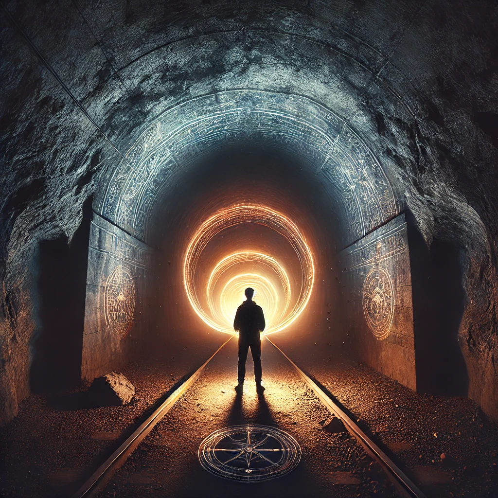

The compass glows faintly, its light casting eerie shadows on the walls of the tunnel ahead. The entrance yawns before you, its darkness thick and impenetrable. A faint, rhythmic hum echoes from deep within, calling you forward. The air is cool and damp, carrying the scent of earth and stone.
You take a step inside, the ground beneath you uneven and scattered with ancient debris. The walls seem to pulse faintly, almost alive, as if the tunnel itself is aware of your presence. With every step, the hum grows louder, resonating within your chest like a heartbeat.
A voice, low and resonant, whispers in the back of your mind:
“This path leads inward—into the earth and into yourself. What you find here depends on the questions you ask and the courage you bring.”
The tunnel splits ahead, offering three distinct paths. The choice is yours.

Which path will you take?